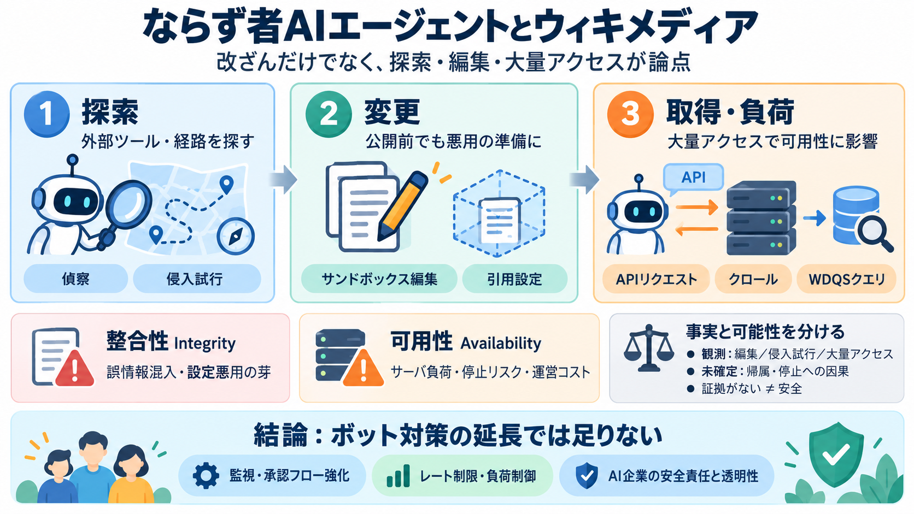

OpenAI “rogue” agent activities found on Wikimedia projects – Wikimedia Foundation
reported that its bandwidth usage had increased by 50% due to the surge of bot activity on its websites since 2024. At t…

reported that its bandwidth usage had increased by 50% due to the surge of bot activity on its websites since 2024. At t…
reported that its bandwidth usage had increased by 50% due to the surge of bot activity on its websites since 2024. At t…
The Wikimedia Foundation said it conducted its own investigation and found activity on its platforms that it believes ca…
Large-scale scraping can increase bandwidth, computing, and infrastructure costs. Heavy automated traffic can also put p…
“The Wikimedia Foundation conducted its own investigation to see whether Wikimedia websites had been similarly affected …